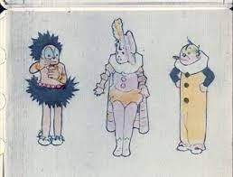
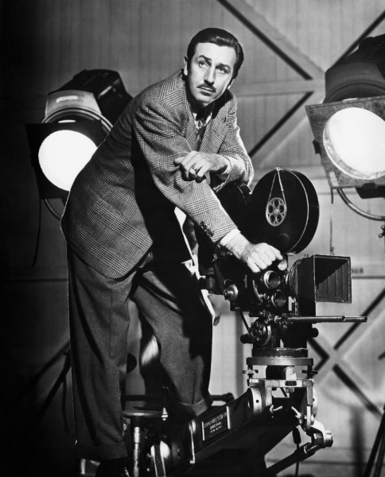

Чем полезны мультфильмы?
Смотреть мультфильмы – интересно и позитивно. Они всегда в моде, ведь получение позитивных эмоций от их просмотра остаются с нами надолго. Просмотр хорошей мультипликации дарит как взрослым, так и детям самые позитивные эмоции, учит хорошим и добрым поступкам, помогает маленьким зрителям поверить в существование мультипликационных героев. Помимо того, что хорошие мультфильмы развивают воображение, они могут также помочь в безопасности пережить негативные эмоции и страхи, показать, как правильно поступать в той или иной ситуации. Поэтому важно, чтобы мультфильмы были не только добрыми, но еще и соответствовали духу времени.
Сколько лет мультфильмам?
Знаете ли вы, что первому мультфильму уже почти 150 лет? Еще в 1877 году Эмиль Рейно решился продемонстрировать любопытствующей публике калейдоскоп из цветных рисованных фигурок, снабдив их музыкальным фоном. И это был первый кирпичик в стене зарождавшейся мультипликации с использованием разнообразных техник рисования, озвучивания и создания не только короткометражных мультиков, но и полноценных мультипликационных сериалов. В мультфильмах особенно четко проявляется фантазия режиссера и художника-аниматора. По их неповторимому почерку мы узнаем любимые мультики. Согласитесь, что картины Диснея и, скажем, японские аниме можно различить с первых секунд, даже не смотря титры к ним. Любой мультфильм направлен, прежде всего, на детскую и подростковую аудиторию, а значит, требования, предъявляемые к нему, особенно высоки. Хороший фильм учит отличать добро от зла, не призывает к агрессии и побуждает познавать окружающий человека мир. Первый Диснейленд открылся 17 июля 1955 года в городе Анахайме (штат Калифорния), на юге от Лос-Анджелеса. На его строительство было затрачено $17 млн, но очень скоро все вложения окупились в десятикратном размере. За первые 25 лет существования парк посетили более 200 млн человек. В 1983 году свой «Диснейленд» появился в Токио, а в 1992 – в Париже.Первый Диснейленд открылся 17 июля 1955 года в городе Анахайме (штат Калифорния), на юге от Лос-Анджелеса. На его строительство было затрачено $17 млн, но очень скоро все вложения окупились в десятикратном размере. За первые 25 лет существования парк посетили более 200 млн человек. В 1983 году свой «Диснейленд» появился в Токио, а в 1992 – в Париже.На открытие парка приехали 28 тыс. человек. И ещё девяносто миллионов телезрителей смогли в прямом эфире увидеть этот грандиозный праздник. Церемонию открытия первого Диснейленда по телевидению вёл будущий президент США актёр Рональд Рейган. Это был совершенно оригинальный и ни на что не похожий парк, заложенный по четырем основным принципам.
- Общая идея — восстановить волшебное царство мультфильмов Уолта Диснея.
- Добавить к этому разнообразные и новые технические трюки, которые создавали бы у посетителей впечатление, что они, к примеру, плывут через джунгли, или видят перед собой призраков, или сидят в подводной лодке на дне моря.
- Увлекательные прогулки по окрестностям со специальным тематическим планом.
- Увеселительный парк должен был стать местом отдыха для всей семьи, причем особое внимание уделялось здесь безопасности, вежливости и чистоте.

История мультфильмов
Первые мультфильмы были коротенькими и бессюжетными, наивными и простыми. В 1900 году вышел «Очаровательный рисунок» Джеймса Стюарта Блэктона, это был даже сколько не мультфильм, а театрализованное произведение. Художник на глазах у зрителей рисовал фигуры, которые с помощью незамысловатому на сегодняшний день монтажу получили движение, жизнь, они ожили на глазах у зрителей. К началу ХХ-го века анимация уже приобрела оригинальное творческое воплощение – сформировались различные стили мультипликации, персонажи стали одухотвореннее, а сюжеты стали сложнее и уникальнее. Мультипликаторы поняли, что сила анимации как раз в ее нереалистичности, в возможности изображать фантазии, далекие от обыденности. В 1908 году французский мультипликатор Эмиль Коль выпускает анимационный фильм «Фантасмагория или кошмар Фантоша». Это будет первый в истории мультипликации мультфильм, где уже будет самодостаточный сюжет, характерные персонажи и главный герой. Мультипликаторы из США становятся лидерами в мировом производстве анимационных фильмов. В 1911 году известный американский мультипликатор Уинзор Маккей выпускает первый цветной мультик «Маленький Немо», а в 1914 году «Динозавр Герти». Это был первый случай, когда главному герою сопереживали зрители.
История DISNEY
История «Walt Disney Company» началась в далеком 1901 году 5 декабря, когда в семье плотника и учительницы родился четвертый из пяти детей — Уолтер Элиас. Когда Уолту было 4 года семья Диснеев перебралась в небольшой городок Марселин, штат Миссури. Там Диснеи приобрели ферму. У семьи не было денег на карандаши и бумагу, а Уолт хотел рисовать. Он нашел смолу, палку и нарисовал дом… В Марселин многие знали Уолта. Он отличался веселым нравом, поэтому соседи и просто знакомые его очень любили. Один из соседей, пожилой ветеран, доктор Шервуд, заплатил Уолту 25 центов за то, что мальчишка нарисовал на клочке бумаги его лошадь. Позднее Дисней считал, что именно удачный портрет кобылы доктора Шервуда и натолкнул его на мысль стать художником. Уолт с детства проявил интерес к рисованию, а свои первые комиксы начал продавать уже в семь лет. Юный Уолт принимал участие в создании школьной газеты как художник и фотограф, а вечерами посещал академию изящных искусств. Потом он прошел курс газетных карикатуристов, где учили нестандартному мышлению, забавным нарушениям привычной логики и лаконичной манере. Вскоре они решили переехать в Канзас Сити, — как и многие бедные семьи, мигрировавшие без конца по Америке в поисках заработка. Этот переезд сыграл значительную роль в жизни Уолта. В Канзас Сити был гигантский богатый особняк, скрывавшийся за высокой оградой и окруженный пышным садом. Особняк принадлежал частному владельцу и являлся предметом вожделения местных ребятишек. Всем им так хотелось проползти через какой-нибудь тайный лаз, поиграть в саду, а может быть, и пробраться в сам особняк, побегать по его роскошным анфиладам, поглазеть на старинные портреты. Уолт много раз пытался проникнуть на территорию владения, и все его попытки заканчивались неудачами. Тогда он поклялся, что, когда вырастет, обязательно построит огромный дом с развлечениями для детей, с громадным садом для игр. Так, по-видимому, зародилась мечта, спустя целых сорок лет воплотившаяся в Диснейленде.